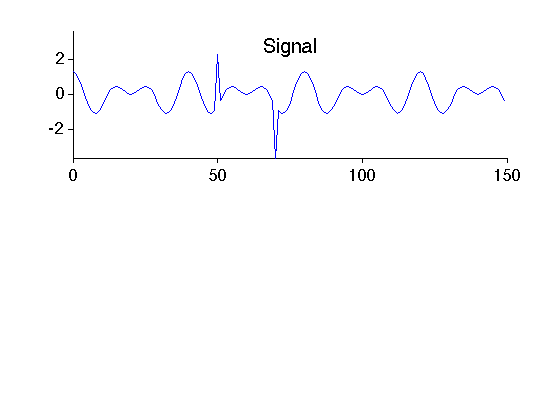
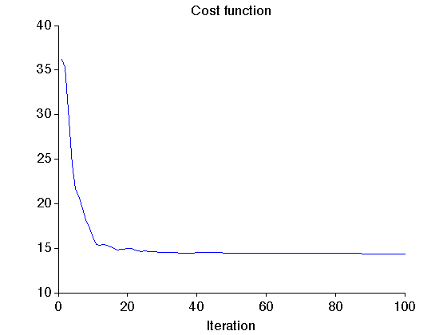
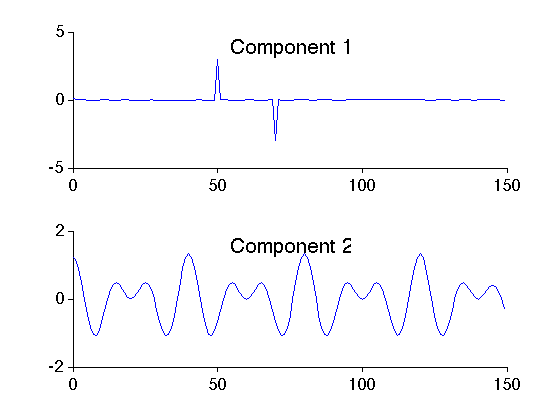
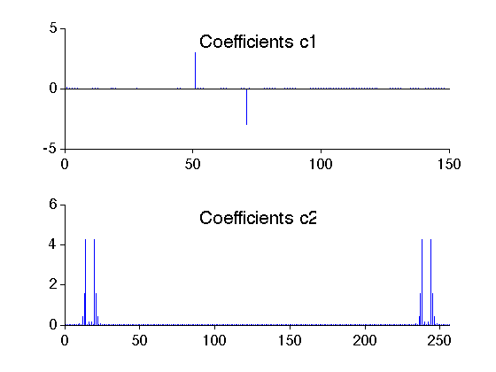

Example: Signal separation using dual basis pursuit (Example 1)
Decompose a signal (spikes plus sinusoids) in to two signals: spikes alone and sinusoids alone. The example illustrated 'morphological component analysis' (MCA) using dual basis pursuit.
Ivan Selesnick NYU-Poly selesi@poly.edu 2011
Contents
Start
clear close all MyGraphPrefsON printme = @(filename) print('-deps', sprintf('figures/Example_dualBP_1_%s', filename) ); I = sqrt(-1);
Create signal
The simulated signal contains two spikes and two sinusoids.
M = 150; % M : signal length m = (0:M-1)'; y = cos(0.1*pi*m) + cos(0.15*pi*m); % sinusoids y = y/1.5; y = y + 3*(m == 50); % spikes y = y - 3*(m == 70); ymax = max(abs(y)); figure(1) clf subplot(2,1,1) plot(m, y); xlim([0 M]) ylim([-ymax ymax]) box off mytitle('Signal'); xlabel(' ') printme('signal')
Define the two Parseval transforms
Define tramsforms A1 and A2 such that A1*A1T = p1*Identity, and A2*A2T = p2*Identity.
% A1 : identity A1 = @(x) x; A1T = @(x) x; p1 = 1; % A2 : over-sampled DFT (normalized so that Parseval frame constant is 1.) N = M; N = 256; A2 = @(x) A(x,M,N)/sqrt(N); A2T = @(x) AT(x,M,N)/sqrt(N); p2 = 1;
Verify Parseval energy identity
E = sum(abs(y(:)).^2); c1 = A1T(y); c2 = A2T(y); E1 = sum(abs(c1(:)).^2); E2 = sum(abs(c2(:)).^2); fprintf('Signal energy = %.3e\n', E) fprintf('Transform 1 energy = %.3e\n', E1/p1) fprintf('Transform 2 energy = %.3e\n', E2/p2) % The energy is the same with both transforms (and the same as the signal energy).
Signal energy = 8.197e+01 Transform 1 energy = 8.197e+01 Transform 2 energy = 8.197e+01
Verify perfect reconstruction property
err = p1*y - A1(c1); fprintf('Transform A1 : maximum reconstruction error = %g\n', max(abs(err(:)))) err = p2*y - A2(c2); fprintf('Transform A2 : maximum reconstruction error = %g\n', max(abs(err(:))))
Transform A1 : maximum reconstruction error = 0 Transform A2 : maximum reconstruction error = 4.44089e-16
Peform signal separation
Use the command 'dualBP' (dual basis pursuit) to separate the signal into two distinct components.
theta = 0.6; % theta : trade-off parameter Nit = 100; % Nit : number of iterations mu1 = 1.5; % mu1, mu2 : ADMM parameters mu2 = 1.0; [y1,y2,c1,c2,costfn] = dualBP(y, A1, A1T, p1, A2, A2T, p2, theta, 1-theta, mu1, mu2, Nit);
Display cost function
figure(2) clf it1 = 1; plot(1:Nit, costfn) xlim([0 Nit]) box off title('Cost function') xlabel('Iteration')
Calculate signal components
The two components y1 and y2 can be found by applying the transforms to the coefficients c1 and c2 produced by the dual basis pursuit algorithhm.
y1 = A1(c1); y2 = A2(c2); % Verify that y = y1 + y2 fprintf('Maximum of residual = %g\n', max(abs(y - y1 - y2)))
Maximum of residual = 4.44089e-16
Display signal components obtained using dual BP
figure(3) clf subplot(2,1,1) plot(m, real(y1)) xlim([0 M]) mytitle('Component 1'); box off subplot(2,1,2) plot(m, real(y2)) xlim([0 M]) box off mytitle('Component 2'); xlabel(' ') printme('components')
It can be seen that the coefficients are sparse.
figure(4) clf subplot(2,1,1) stem(c1, 'marker', 'none') box off mytitle('Coefficients c1'); subplot(2,1,2) stem(abs(c2), 'marker', 'none') mytitle('Coefficients c2'); box off xlim([0 N]) xlabel(' ') printme('coefficients')
MyGraphPrefsOFF